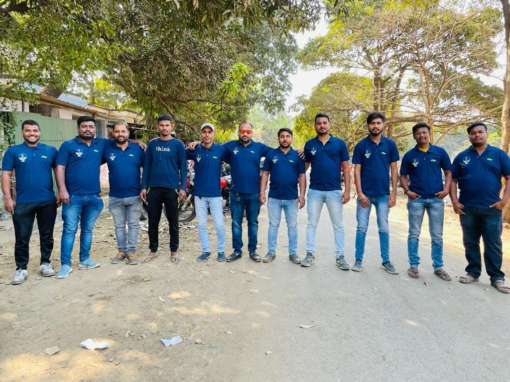

Cows & dogs
These animals are central to the Trust’s published rescue and treatment work.
ABOUT THE TRUST
Animal welfare rooted in Jamshedpur, Jharkhand.

♡Jan Seva Sangh Trust was established on 2 October 2016 and registered in 2021. Founder Suraj Kumar’s experience arranging treatment for an injured bull inspired him and his friends to help other animals.
Rescue and care for injured or abandoned animals, especially cows and dogs, while encouraging responsible community action.
A society where animals receive timely care, safe shelter and respect.
History, founder and purpose ↗ · Source checked 12 October 2026.
ANIMAL WELFARE
The Trust’s published work includes rescue, medical support, shelter, rehabilitation and public awareness. Programme availability should be confirmed with the team.
These animals are central to the Trust’s published rescue and treatment work.
Published information mentions bird recovery, urban wildlife conservation and human–wildlife conflict mitigation.
Ask the rescue team whether appropriate care is available for the species involved. Dedicated cat services are not specified in the reviewed pages.
OUR HISTORY
Suraj Kumar and friends began helping injured animals in Jamshedpur in 2016. The Trust’s published story describes neighbours and volunteers contributing medicines, food and care as the work grew. It was registered in 2021.
The Trust also describes a temporary recovery centre in Dalma and development of a permanent rehabilitation facility. Source pages give different dates for these stages, so no disputed dates are assigned here.
Published history ↗ · Source checked 12 October 2026.
CATTLE CARE & COMMUNITY
Published as a cumulative figure since 2016.
For injured or ill cattle; reporting period not specified.
Animal rights and safety activities; reporting period not specified.
These are figures from the dedicated impact page. They use different categories from the homepage totals and have not been added together.
Cattle-care and community figures ↗ · Source checked 12 October 2026.
These identifiers are reproduced from the Trust’s About page. Current validity and donation eligibility have not been checked against government records; request current documentation from the Trust.
Published legal details ↗ · Source checked 12 October 2026.
Donation enquiriesTAKE THE NEXT STEP
A KINDER TOMORROW STARTS TODAY